Pré-Postagem Manual no MeusCorreios
Este guia apresenta o processo de criação manual de uma pré-postagem no MeusCorreios, desde a abertura do lote e o cadastro dos objetos até a impressão das etiquetas e a emissão da lista de postagem.
1. Acessar a Pré-Postagem
Na barra lateral do MeusCorreios, clique em Pré-Postagem.
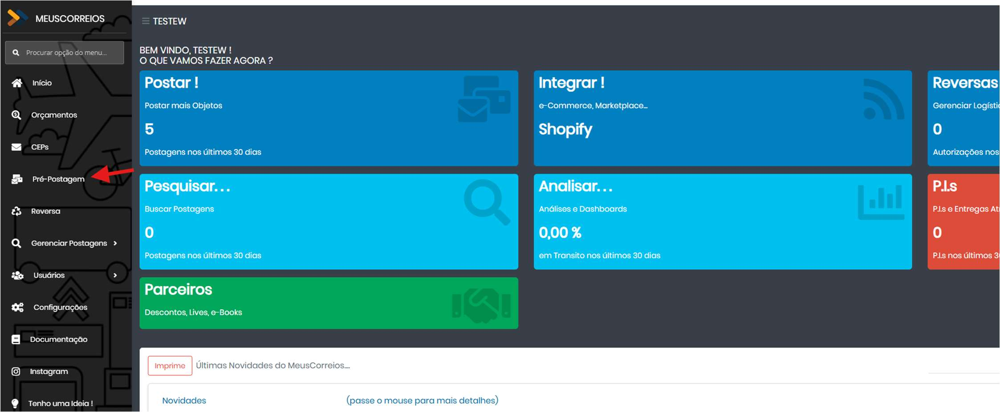
2. Criar um lote manual
- Na tela de Pré-Postagem, clique em Novo.
- Selecione o Cartão de Postagem.
- Escolha a forma de postagem Digitação.
- O lote e a descrição podem ser preenchidos manualmente ou deixados para criação automática pelo sistema.
- Use a opção exibida na tela para criar o lote e começar a postar.
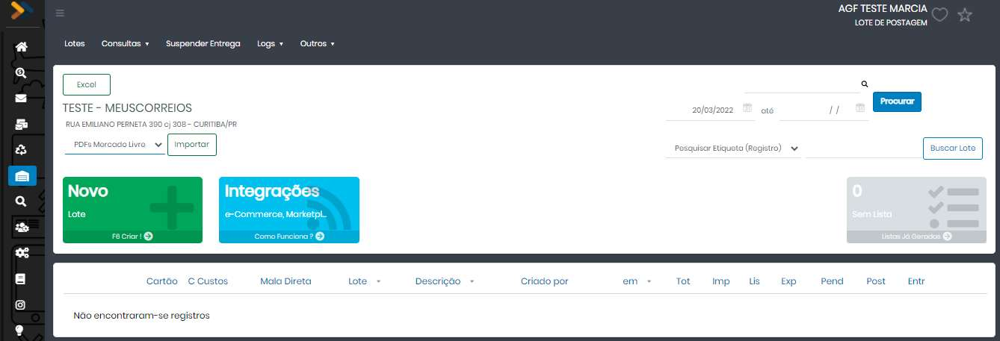
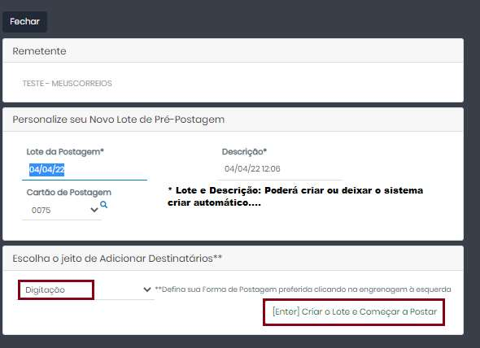
3. Preencher os dados do objeto
Cadastre as informações do destinatário, do endereço e do objeto. Repita o procedimento para cada destinatário do lote.
3.1. Destinatário e endereço
- Preencha os dados do destinatário e mantenha o número do imóvel com um valor numérico válido, sem sinais ou pontuação.
- Use o botão indicado ao lado da letra Q para avançar de um campo para outro, somente depois de concluir o preenchimento.
- Ao informar um destinatário utilizado anteriormente, selecione o nome sugerido e clique em F7 Traz Histórico. O sistema preencherá os dados da última postagem realizada para esse destinatário.
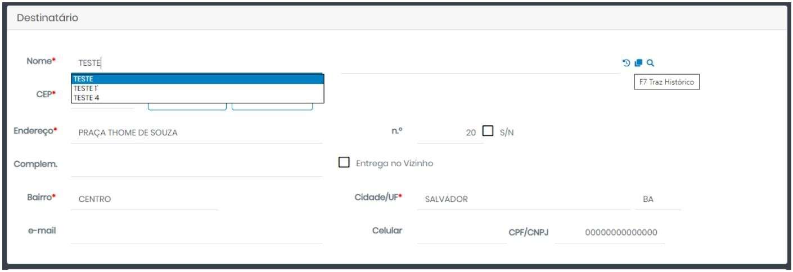
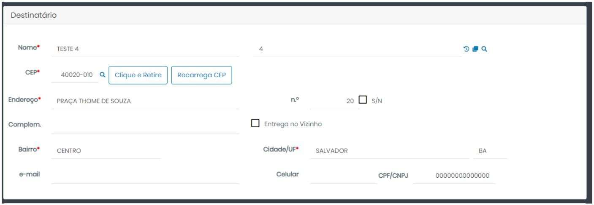
3.2. Serviço e adicionais
- Informe o CEP, a CAIXA e o PESO do objeto.
- Abra a área Serviços, disponível acima do campo Destinatário.
- Clique em Selecione o Serviço para consultar os serviços disponíveis e seus valores.
- Quando necessário, marque os serviços adicionais: AR, Mão Própria, Valor Declarado (VD - Seguro) ou Declarar Conteúdo.
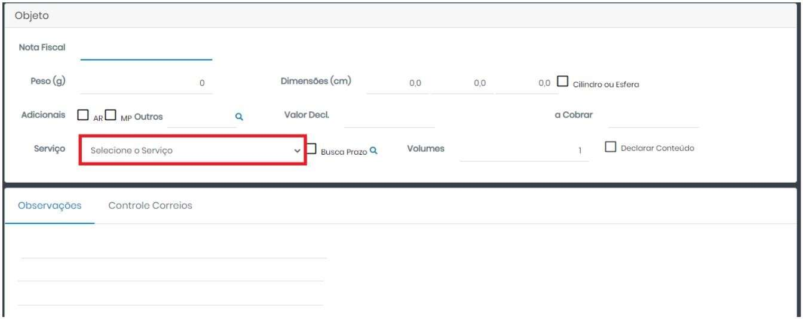
3.3. Preencher a Declaração de Conteúdo
Para preencher e imprimir a Declaração de Conteúdo, marque a opção Declarar Conteúdo, no canto inferior direito da área do objeto, e informe os itens enviados.
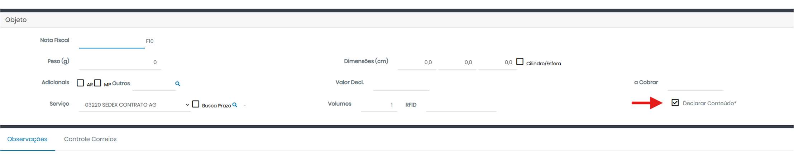
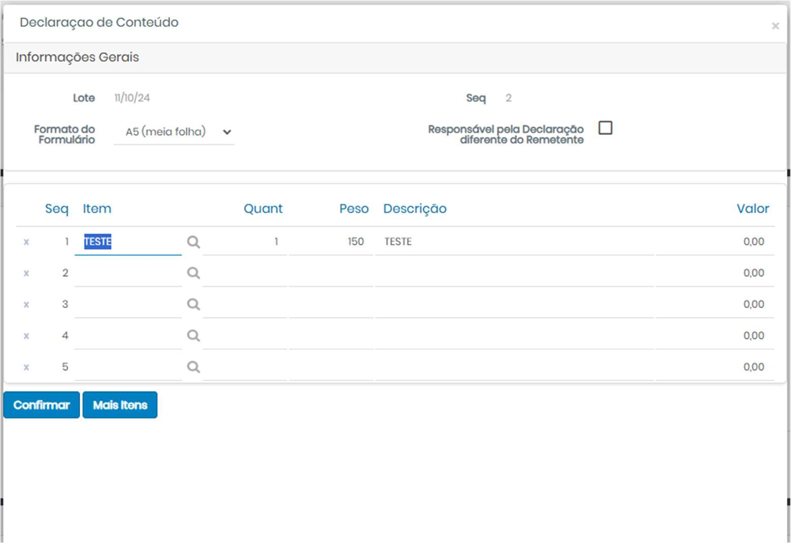
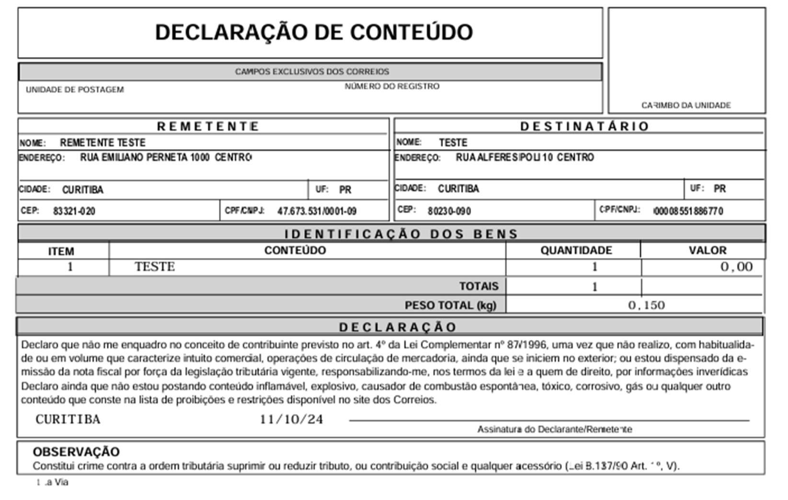
3.4. Salvar e continuar
- Clique em Salvar para finalizar o objeto atual.
- Inclua os demais destinatários do lote, repetindo o preenchimento.
- Ao terminar, clique em F12 Voltar para retornar ao lote de objetos.
4. Acompanhar as etapas pendentes
Depois da digitação, o MeusCorreios identifica o que ainda falta por meio dos cartões vermelhos exibidos na tela de Pré-Postagem e dentro do lote.
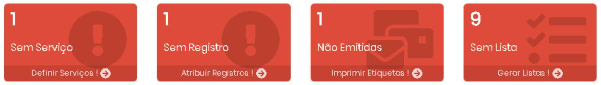
| Status | O que significa | Ação indicada |
|---|---|---|
| Sem Serviço | Pedidos importados ou digitados sem serviço atribuído. Verifique também o dicionário de serviços. | Definir Serviços |
| Sem Registro | O serviço foi atribuído, mas a etiqueta ainda não foi vinculada. Pode haver falta de estoque; consulte o Range de Etiquetas. | Atribuir Registros |
| Não Emitidos | O pedido já possui serviço e etiqueta, mas a impressão ainda não foi realizada. | Imprimir Etiquetas |
| Sem Lista | As etiquetas foram emitidas, mas a lista de postagem ainda não foi gerada. | Gerar Listas |
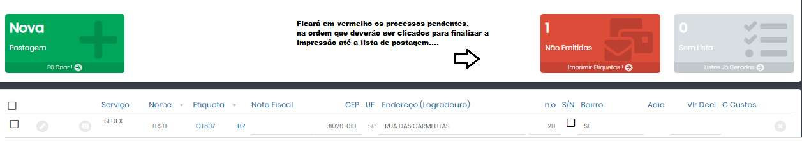
5. Imprimir as etiquetas
- Clique no cartão vermelho Não Emitidos.
- Na tela de impressão, clique em Imprime Tudo.
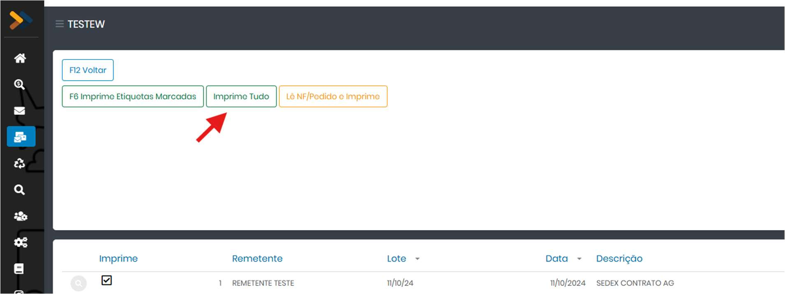
5.1. Selecionar o modelo da etiqueta
Selecione o modelo de etiqueta desejado na janela de impressão e confirme.
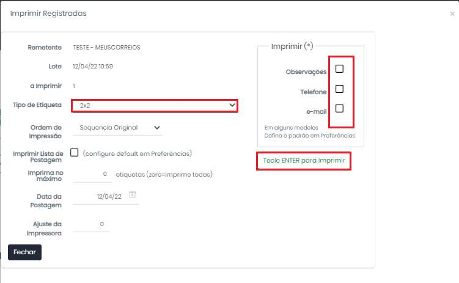
5.2. Cadastrar o logotipo da etiqueta
O logotipo exibido na etiqueta pode ser cadastrado em Configurações → Remetentes.
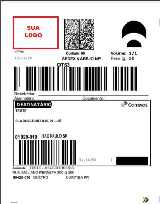
5.3. Emitir o Aviso de Recebimento (AR)
Quando o AR tiver sido selecionado durante a digitação, acesse Imprime → ARs, VPs e DDs para emitir o formulário.
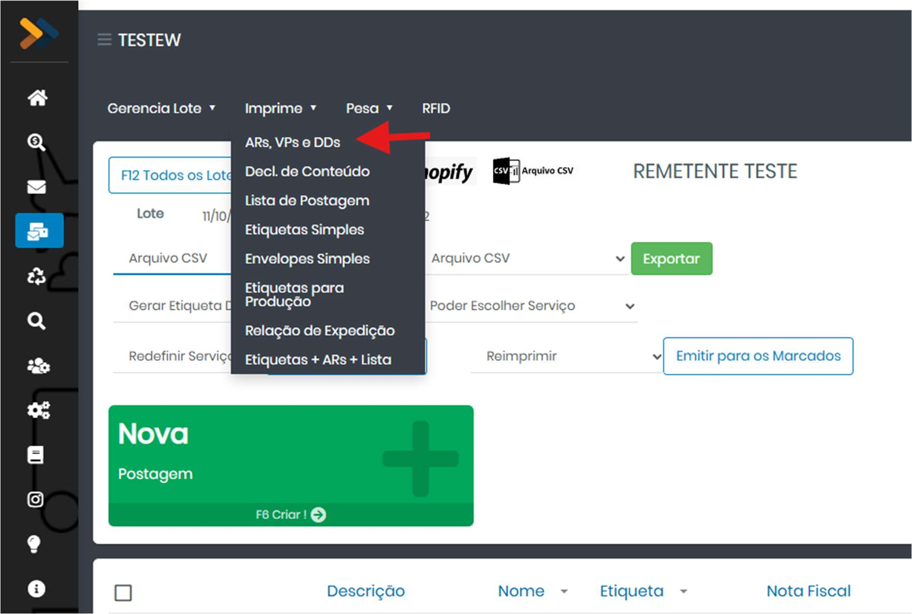
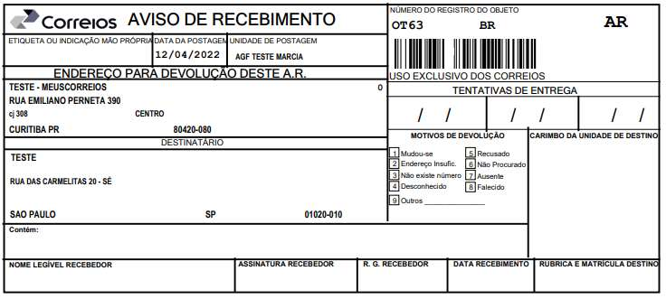
6. Emitir a lista de postagem
- Clique no cartão vermelho Sem Lista.
- Selecione os objetos que farão parte da lista ou clique em Imprimir todos e Voltar.
- Confira a lista impressa antes de encaminhar as caixas para a agência que atende a empresa.
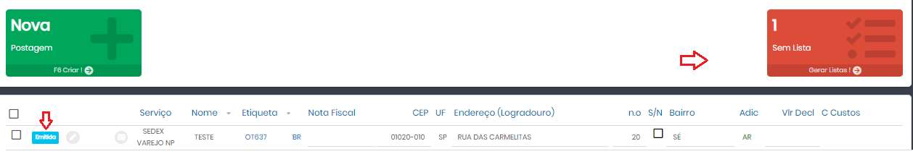
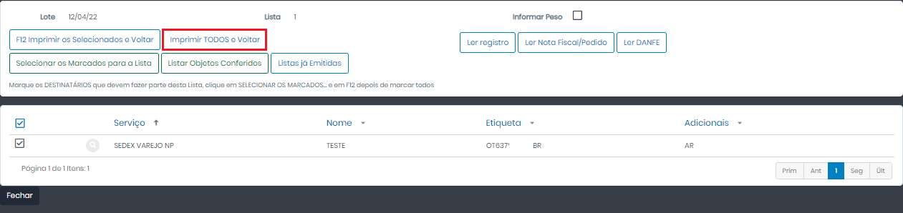
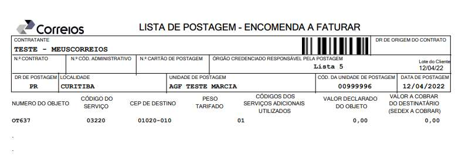
7. Configurações da Pré-Postagem
Em Configurações, várias opções da Pré-Postagem podem ser definidas antecipadamente.
Entre as opções exibidas estão o tipo de postagem, a criação automática de lotes, embalagem preferida, definição e preferência de serviço, comportamento do AR, peso e dimensões, observações, nota fiscal, valor declarado e regras de impressão.
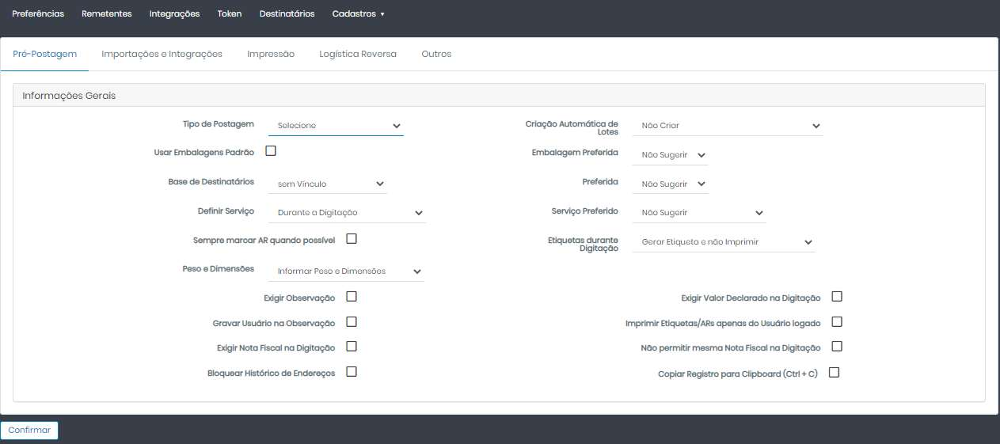